BERT 简介（已整理）¶
约 8038 个字 预计阅读时间 27 分钟
Self-supervised Learning¶
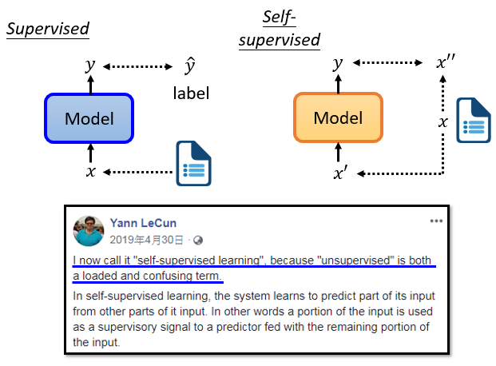
-
每个人都应该熟悉监督学习，当我们做监督学习时，我们只有一个模型，这个模型的输入是x，输出是y。
假设你今天想做情感分析，你就是让机器阅读一篇文章，而机器需要对这篇文章进行分类是正面的还是负面的，你必须先找到大量的文章，你需要对所有的文章进行label。我们需要有标签和文章数据来训练监督模型。
-
"Self-supervised" 是用另一种方式来监督，没有标签。假设我们只有一堆没有label的文章，但我们试图找到一种方法把它分成两部分。
我们让其中一部分作为模型的输入数据，另一部分作为标签。
假设你有没有label的数据，例如一篇文章叫x，我们把x分成两部分，一部分叫x'，另一部分叫x''，然后把x'输入模型，让它输出y。如果我们在模型训练中使用标签，我们称之为监督学习。由于在Self-supervised学习中不使用标签，我们可以说，Self-supervised学习也是一种无监督的学习方法。但之所以叫Self-supervised Learning，是为了让定义更清晰。
-
"Self-supervised Learning "这个词，当初Yann LeCun说过，其实并不是一个老词。根据2019年4月在Facebook上的一个帖子，他说，我现在说的这个方法，他叫Self-supervised Learning。为什么不叫无监督学习呢？因为无监督学习是一个比较大的家族，里面有很多不同的方法，为了让定义更清晰，我们叫它 "自监督"，比如我们之前提到的cycle gan，也是无监督学习的一个案例，我们也不使用标注的配对数据，但是它和Self-supervised Learning还是有点区别。在无监督学习的范畴内，有很多方法，Self-supervised Learning就是其中之一。
Masking Input¶
Self-supervised Learning是什么意思呢，我们直接拿BERT模型来说。
首先，BERT是一个transformer的Encoder，我们已经讲过transformer了，我们也花了很多时间来介绍Encoder和Decoder，transformer中的Encoder它实际上是BERT的架构，它和transformer的Encoder完全一样，里面有很多Self-Attention和Residual connection，还有Normalization等等，那么这就是BERT。
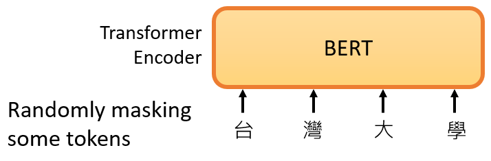
如果你已经忘记了Encoder里有哪些部件，你需要记住的关键点是，BERT可以输入一行向量，然后输出另一行向量，输出的长度与输入的长度相同。
BERT一般用于自然语言处理，用于文本场景，所以一般来说，它的输入是一串文本，也是一串数据。
当我们真正谈论Self-Attention的时候，我们也说不仅文本是一种序列，而且语音也可以看作是一种序列，甚至图像也可以看作是一堆向量。对于BERT同样的想法是，不仅用于NLP，或者用于文本，它也可以用于语音和视频。
接下来我们需要做的是，随机盖住一些输入的文字，被mask的部分是随机决定的，例如，我们输入100个token，什么是token？在中文文本中，我们通常把一个汉字看作是一个token，当我们输入一个句子时，其中的一些词会被随机mask。
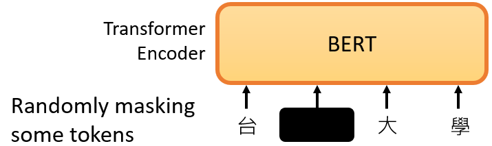
mask的具体实现有两种方法。
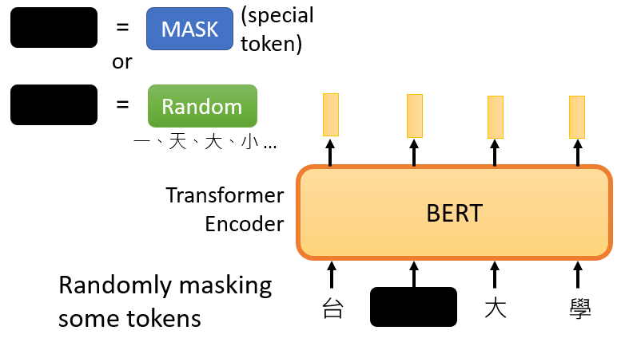
- 第一种方法是，用一个特殊的符号替换句子中的一个词，我们用 "MASK "标记来表示这个特殊符号，你可以把它看作一个新字，这个字完全是一个新词，它不在你的字典里，这意味着mask了原文。
- 另外一种方法，随机把某一个字换成另一个字。中文的"湾"字被放在这里，然后你可以选择另一个中文字来替换它，它可以变成"一 "字，变成"天"字，变成"大"字，或者变成"小"字，我们只是用随机选择的某个字来替换它
所以有两种方法来做mask，一种是添加一个特殊的标记"MASK"，另一种是用一个字来替换某个字。
两种方法都可以使用。使用哪种方法也是随机决定的。因此，当BERT进行训练时，向BERT输入一个句子，先随机决定哪一部分的汉字将被mask。
mask后，一样是输入一个序列，我们把BERT的相应输出看作是另一个序列，接下来，我们在输入序列中寻找mask部分的相应输出，然后，这个向量将通过一个 Linear transform。
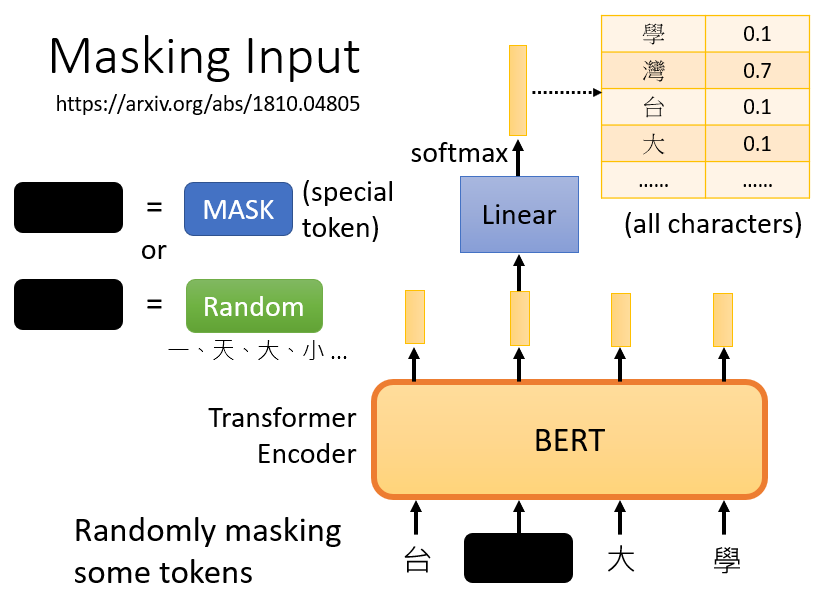
所谓的Linear transform是指，输入向量将与一个矩阵相乘，然后做softmax，输出一个分布。
这与我们在Seq2Seq模型中提到的使用transformer进行翻译时的输出分布相同。输出是一个很长的向量，包含我们想要处理的每个汉字，每一个字都对应到一个分数。
在训练过程中。我们知道被mask的字符是什么，而BERT不知道，我们可以用一个one-hot vector来表示这个字符，并使输出和one-hot vector之间的交叉熵损失最小。
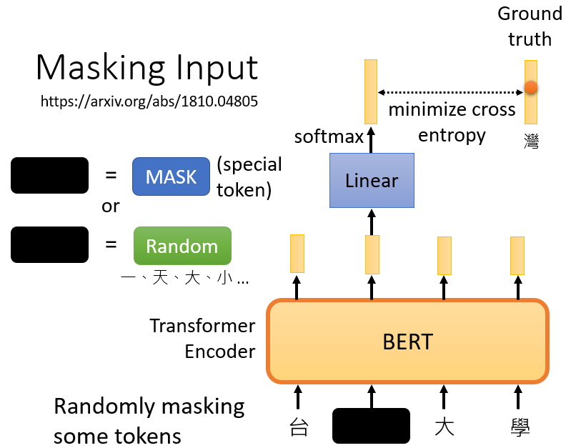
或者说得简单一点，我们实际上是在解决一个分类问题。现在BERT要做的是，预测什么被盖住。被掩盖的字符，属于"湾"类。
在训练中，我们在BERT之后添加一个线性模型，并将它们一起训练。所以，BERT里面是一个transformer的Encoder，它有一堆参数。这两个需要共同训练，并试图预测被覆盖的字符是什么，这叫做mask。
Next Sentence Prediction¶
事实上，当我们训练BERT时，除了mask之外，我们还会使用另一种方法，这种额外的方法叫做 Next Sentence Prediction。
它的意思是，我们从数据库中拿出两个句子，这是我们通过在互联网上抓取和搜索文件得到的大量句子集合，我们在这两个句子之间添加一个特殊标记。这样，BERT就可以知道，这两个句子是不同的句子，因为这两个句子之间有一个分隔符。
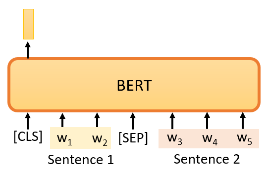
我们还将在句子的开头添加一个特殊标记，这里我们用CLS来表示这个特殊标记。
现在，我们有一个很长的序列，包括两个句子，由SEP标记和前面的CLS标记分开。如果我们把它传给BERT，它应该输出一个序列，因为输入也是一个序列，这毕竟是Encoder的目的。
我们将只看CLS所对应的输出，我们将把这个输出乘以一个Linear transform。
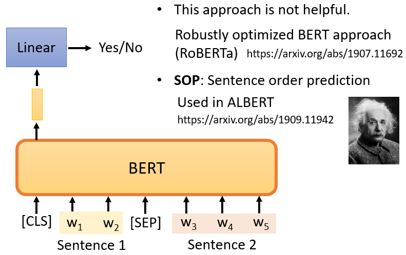
现在它要做的就是一个二元分类问题，有两个可能的输出：Yes或者No。这个方法被称为Next Sentence Prediction ，所以我们需要预测，第二句是否是第一句的后续句。如果这两个句子是相接的，那么BERT就要输出Yes，反之输出No。
然而，后来的研究发现，对于BERT要做的任务来说，Next Sentence Prediction 并没有真正的帮助。例如，有一篇论文叫 "Robustly Optimized BERT Approach"，简称RoBERTa。在这篇论文中明确指出，实施 Next Sentence Prediction 几乎没有任何帮助。
在这之后，许多论文也开始说它没有用。例如，SCAN-BERT和XLNet都说Next Sentence Prediction 方法是无用的。它可能是无用的原因之一可能是，Next Sentence Prediction 太简单了。
这个任务的典型方法是，首先随机选择一个句子，然后从数据库中或随机选择要与前一个句子相连的句子。通常，当我们随机选择一个句子时，它看起来与前一个句子有很大不同。对于BERT来说，预测两个句子是否相连并不是太难。因此，在训练BERT完成Next Sentence Prediction 的任务时，没有学到什么太有用的东西。
还有一种类似于 Next Sentence Prediction 的方法，它在文件上看起来更有用，它被称为 Sentence order prediction，简称 SOP。
这个方法的主要思想是，我们最初挑选的两个句子原本就是相连的。可能有两种可能性：要么句子1在句子2后面相连，要么句子2在句子1后面相连。有两种可能性，我们问BERT是哪一种。
也许因为这个任务更难，它似乎更有效。它被用在一个叫ALBERT的模型中，这是BERT的高级版本。由于ALBERT这个名字与爱因斯坦相似，我在幻灯片中放了一张爱因斯坦的图片。
当我们训练时，我们要求BERT学习两个任务。
-
一个是掩盖一些字符，具体来说是汉字，然后要求它填补缺失的字符。
-
另一个任务表明它能够预测两个句子是否有顺序关系。
所以总的来说，BERT它学会了如何填空。BERT的神奇之处在于，在你训练了一个填空的模型之后，它还可以用于其他任务。这些任务不一定与填空有关，也可能是完全不同的任务，但BERT仍然可以用于这些任务，这些任务是BERT实际使用的任务，它们被称为 Downstream Tasks(下游任务)。
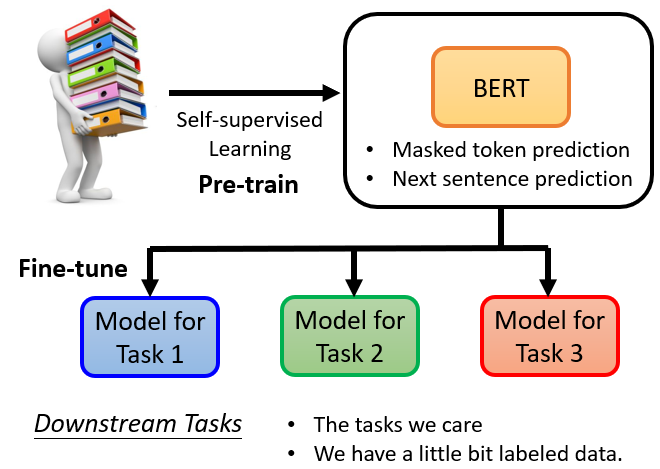
所谓的 "Downstream Tasks "是指，你真正关心的任务。但是当我们想让BERT学习做这些任务时，我们仍然需要一些标记的信息。
总之，BERT只是学习填空，但是，以后可以用来做各种你感兴趣的Downstream Tasks 。它就像胚胎中的干细胞，它有各种无限的潜力，虽然它还没有使用它的力量，它只能填空，但以后它有能力解决各种任务。我们只需要给它一点数据来激发它，然后它就能做到。
BERT分化成各种任务的功能细胞，被称为 Fine-tune (微调)。所以，我们经常听到有人说，他对BERT进行了微调，也就是说他手上有一个BERT，他对这个BERT进行了微调，使它能够完成某种任务，与微调相反，在微调之前产生这个BERT的过程称为 Pre-train。
所以，生成BERT的过程就是Self-supervised学习。但是，你也可以称之为预训练。如果你知道它是什么，你不应该在其他地方寻找Self-supervised学习的模型，直接应用在作业上。因为这些方法，往往带有令人难以置信的强大能力，这将使你要做的事情变得很无聊。
好的，在我们谈论如何微调BERT之前，我们应该先看看它的能力。今天 ，为了测试Self-supervised学习的能力，通常，你会在多个任务上测试它。因为我们刚才说，BERT就像一个胚胎干细胞，它要分化成各种任务的功能细胞，我们通常不会只在一个任务上测试它的能力，你会让这个BERT分化成各种任务的功能细胞，看看它在每个任务上的准确性，然后我们取其平均值，得到一个总分。这种不同任务的集合，我们可以称之为任务集。任务集中最著名的基准被称为 GLUE，它是General Language Understanding Evaluation的缩写。
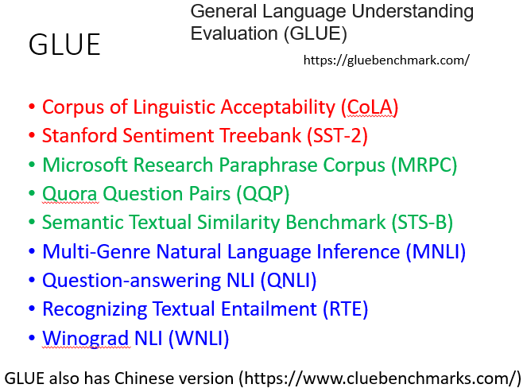
在GLUE中，总共有9个任务。一般来说，你想知道像BERT这样的模型是否被训练得很好。所以，你实际上会得到9个模型，用于9个单独的任务。你看看这9个任务的平均准确率，然后你得到一个值。这个值代表这个Self-supervised模型的性能。
让我们看看BERT在GLUE上的性能。
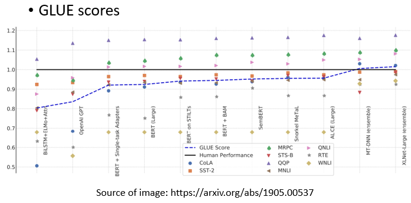
有了BERT，GLUE得分，也就是9个任务的平均得分，确实逐年增加。在这张图中，横轴表示不同的模型，你可以发现除了ELMO和GPT，其他的还有很多BERT，各种BERT。
黑色的线，表示人类的工作，也就是人类在这个任务上的准确度，我们把这个当作1，这里每一个点代表一个任务，那么为什么要和人类的准确度进行比较呢？
人类的准确度是1，如果他们比人类好，这些点的值就会大于1，如果他们比人类差，这些点的值就会小于1，这是因为这些任务，其评价指标可能不一定是正确率。每个任务使用的评价指标是不同的，它可能不是准确度。如果我们只是比较它们的值，可能是没有意义的。所以，这里我们看的是人类之间的差异。
所以，你会发现，在原来的9个任务中，只有1个任务，机器可以比人类做得更好。随着越来越多的技术被提出，越来越多的，还有3个任务可以比人类做得更好。对于那些远不如人类的任务，它们也在逐渐追赶。
蓝色曲线表示机器GLUE得分的平均值。还发现最近的一些强势模型，例如XLNET，甚至超过了人类。当然，这只是这些数据集的结果，并不意味着机器真的在总体上超过了人类。它在这些数据集上超过了人类。这意味着这些数据集并不能代表实际的表现，而且难度也不够大。
所以，在GLUE之后，有人做了Super GLUE。他们找到了更难的自然语言处理任务，让机器来解决。好了！展示这幅图的意义主要是告诉大家，有了BERT这样的技术，机器在自然语言处理方面的能力确实又向前迈进了一步。
BERT到底是怎么用的呢？我们将给出4个关于BERT的应用案例，
How to use BERT¶
Case 1： Sentiment analysis¶
第一个案例是这样的，我们假设我们的 Downstream Tasks 是输入一个序列，然后输出一个类别，这是一个分类问题。
比如说Sentiment analysis情感分析，就是给机器一个句子，让它判断这个句子是正面的还是负面的。
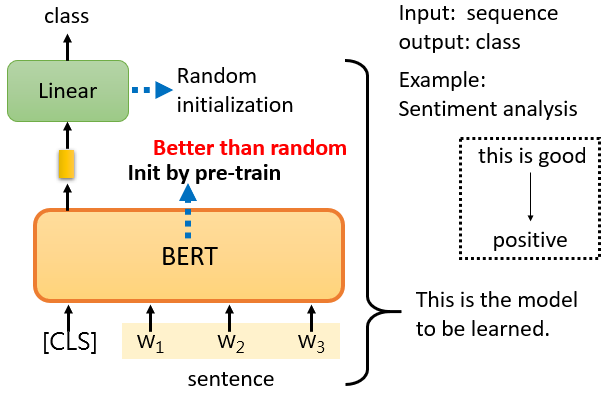
对于BERT来说，它是如何解决情感分析的问题的？
你只要给它一个句子，也就是你想用它来判断情绪的句子，然后把CLS标记放在这个句子的前面，我刚才提到了CLS标记。我们把CLS标记放在前面，扔到BERT中，这4个输入实际上对应着4个输出。然后，我们只看CLS的部分。CLS在这里输出一个向量，我们对它进行Linear transform，也就是将它乘以一个Linear transform的矩阵，这里省略了Softmax。
然而，在实践中，你必须为你的Downstream Tasks提供标记数据，换句话说，BERT没有办法从头开始解决情感分析问题，你仍然需要向BERT提供一些标记数据，你需要向它提供大量的句子，以及它们的正负标签，来训练这个BERT模型。
在训练的时候，Linear transform和BERT模型都是利用Gradient descent来更新参数的。
- Linear transform的参数是随机初始化的
- 而BERT的参数是由学会填空的BERT初始化的。
每次我们训练模型的时候，我们都要初始化参数，我们利用梯度下降来更新这些参数，然后尝试minimize loss，
例如，我们正在做情感分类，但是，我们现在有BERT。我们不必随机初始化所有的参数。我们唯一随机初始化的部分是Linear这里。BERT的骨干是一个巨大的transformer的Encoder。这个网络的参数不是随机初始化的。把学过填空的BERT参数，放到这个地方的BERT中作为参数初始化。
我们为什么要这样做呢？为什么要用学过填空的BERT再放到这里呢？最直观和最简单的原因是，它比随机初始化新参数的网络表现更好。当你把学会填空的BERT放在这里时，它将获得比随机初始化BERT更好的性能。
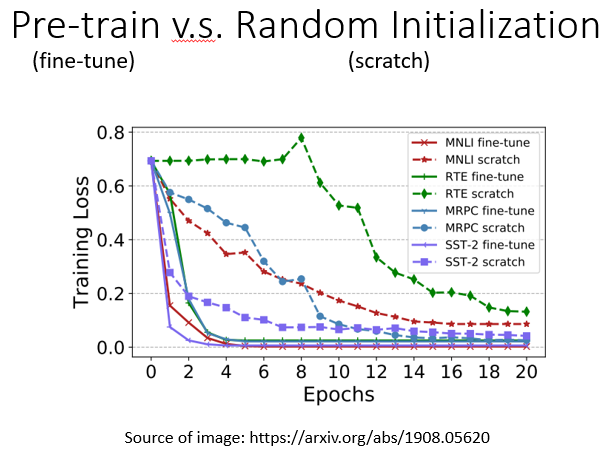
在这里有篇文章中有一个例子。横轴是训练周期，纵轴是训练损失，到目前为止，大家对这种图一定很熟悉，随着训练的进行，损失当然会越来越低，这个图最有趣的地方是，有各种任务。我们不会解释这些任务的细节，我只想说明有各种任务。
- "fine-tune"是指模型被用于预训练，这是网络的BERT部分。该部分的参数是由学习到的BERT的参数来初始化的，以填补空白。
- scratch表示整个模型，包括BERT和Encoder部分都是随机初始化的。
首先，在训练网络时，scratch与用学习填空的BERT初始化的网络相比，损失下降得比较慢，最后，用随机初始化参数的网络的损失仍然高于用学习填空的BERT初始化的参数。
- 当你进行Self-supervised学习时，你使用了大量的无标记数据。
- 另外，Downstream Tasks 需要少量的标记数据。
所谓的 "半监督 "是指，你有大量的无标签数据和少量的有标签数据，这种情况被称为 "半监督"，所以使用BERT的整个过程是连续应用Pre-Train和Fine-Tune，它可以被视为一种半监督方法。
Case 2 ：POS tagging¶
第二个案例是输入一个序列，然后输出另一个序列，而输入和输出的长度是一样的。我们在讲Self-Attention的时候，也举了类似的例子， 例如 POS tagging 。
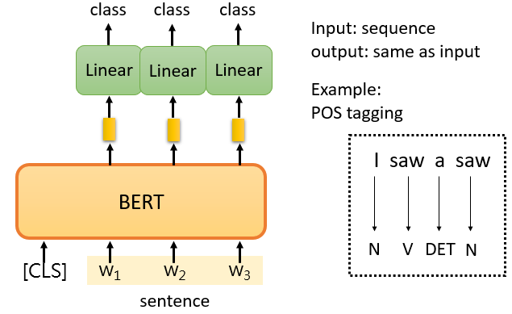
POS tagging的意思是词性标记。你给机器一个句子，它必须告诉你这个句子中每个词的词性，即使这个词是相同的，也可能有不同的词性。
你只需向BERT输入一个句子。之后，对于这个句子中的每一个标记，它是一个中文单词，有一个代表这个单词的相应向量。然后，这些向量会依次通过Linear transform和Softmax层。最后，网络会预测给定单词所属的类别，例如它的词性。
当然，类别取决于你的任务，如果你的任务不同，相应的类别也会不同。接下来你要做的事情和案例1完全一样。换句话说，你需要有一些标记的数据。这仍然是一个典型的分类问题。唯一不同的是，BERT部分，即网络的Encoder部分，其参数不是随机初始化的。在预训练过程中，它已经找到了不错的参数。
当然，我们在这里展示的例子属于自然语言处理。但是，你可以把这些例子改成其他任务，例如，你可以把它们改成语音任务，或者改成计算机视觉任务。我在Self-supervised Learning一节中提到，语音、文本和图像都可以表示为一排向量。虽然下面的例子是文字，但这项技术不仅限于处理文字，它还可以用于其他任务，如计算机视觉。
Case 3：Natural Language Inference¶
在案例3中，模型输入两个句子，输出一个类别。好了，第三个案例以两个句子为输入，输出一个类别，什么样的任务采取这样的输入和输出？ 最常见的是Natural Language Inference ，它的缩写是NLI
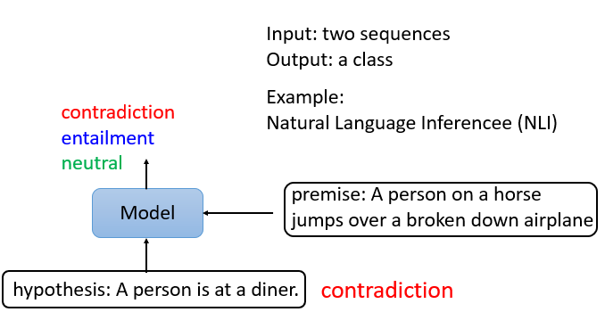
机器要做的是判断是否有可能从前提中推断出假设。这个前提与这个假设相矛盾吗？或者说它们是不是相矛盾的句子。
在这个例子中，我们的前提是，一个人骑着马，然后他跳过一架破飞机，这听起来很奇怪。这是一个基准语料库中的例子。
这里的推论是这个人在一个餐馆。所以这是矛盾的。
所以机器要做的是，把两个句子作为输入，并输出这两个句子之间的关系。这种任务很常见。它可以用在哪里呢？例如，舆情分析。给定一篇文章，下面有一个评论，这个消息是同意这篇文章，还是反对这篇文章？那么把文章和评论丢给机器，然后机器输出一个结果。
BERT是如何解决这个问题的？你只要给它两个句子，我们在这两个句子之间放一个特殊的标记，并在最开始放CLS标记。把这一整串丢进BERT里面，BERT会输出和输入一样长的东西。
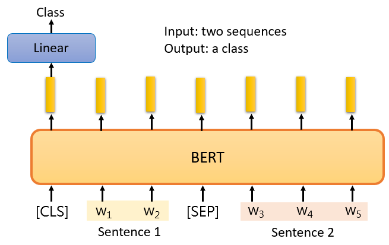
但我们只把CLS标记对应的输出作为Linear transform的输入。它决定这两个输入句子的类别。对于NLI，你会问，这两个句子是否是矛盾的。它是用一些预先训练好的权重来初始化的。
Case 4：Extraction-based Question Answering (QA)¶
这第四个案例，就是我们在作业7中要做的。作业7是一个问答系统。也就是说，给机器读一篇文章，你问它一个问题，它将给你一个答案。
但是，这里的问答稍有限制。这是Extraction-based的QA。也就是说，我们假设答案必须出现在文章中。答案必须是文章中的一个片段。
在这个任务中，一个输入序列包含一篇文章和一个问题，文章和问题都是一个序列。对于中文来说，每个d代表一个汉字，每个q代表一个汉字。你把d和q放入QA模型中，我们希望它输出两个正整数s和e。根据这两个正整数，我们截取文章的第s个字到第e个字，这个片段就是正确的答案。
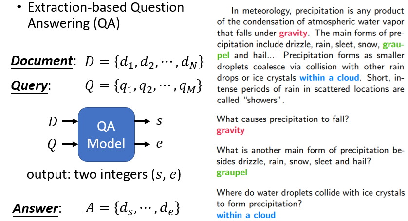
这是现在使用的一个相当标准的方法。更具体地说，这里有一个问题和一篇文章，正确答案是 "gravity"。机器如何输出正确答案？
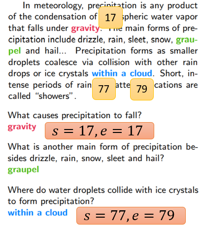
你的QA模型应该输出，s等于17，e等于17，来表示gravity。因为它是整篇文章中的第17个词，所以s等于17，e等于17，意味着输出第17个词作为答案。
当然，我们不是从头开始训练QA模型，为了训练这个QA模型，我们使用BERT预训练的模型。
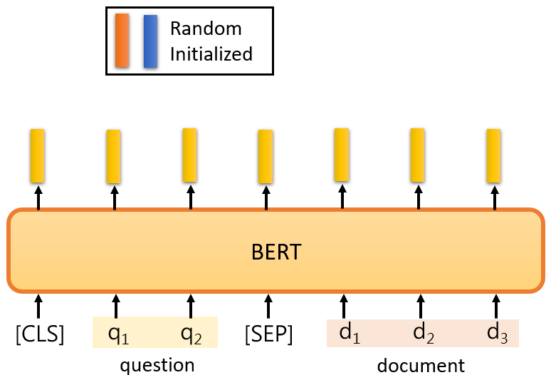
这个解决方案是这样的。对于BERT来说，你必须让它读入一个问题，一篇文章，以及在问题和文章之间的特殊标记，和我们在开头放的CLS标记。
在这个任务中，你唯一需要从头训练的只有两个向量。"从头训练 "是指随机初始化。这里我们用橙色向量和蓝色向量来表示，这两个向量的长度与BERT的输出相同。
假设BERT的输出是768维的向量，这两个向量也是768维的向量。那么，如何使用这两个向量？
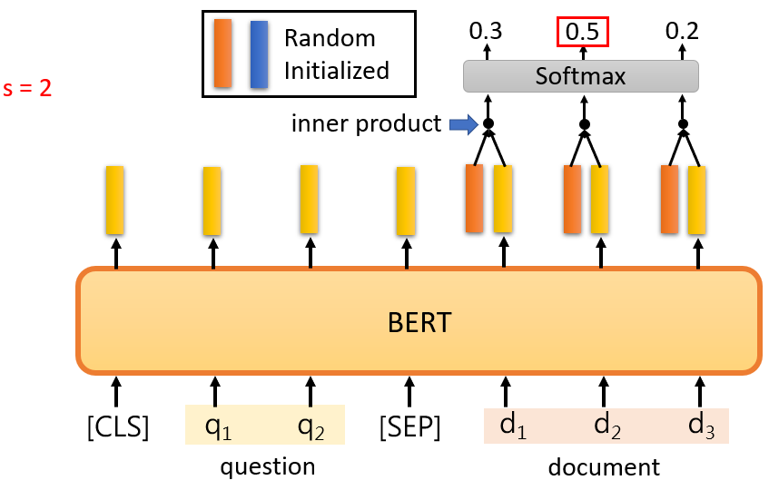
-
首先，计算这个橙色向量和那些与文件相对应的输出向量的内积，由于有3个代表文章的标记，它将输出三个向量，计算这三个向量与橙色向量的内积，你将得到三个值，然后将它们通过softmax函数，你将得到另外三个值。
这个内积和attention很相似，你可以把橙色部分看成是query，黄色部分看成是key，这是一个attention，那么我们应该尝试找到分数最大的位置，就是这里，橙色向量和d2的内积，如果这是最大值，s应该等于2，你输出的起始位置应该是2
-
蓝色部分做的是完全一样的事情。
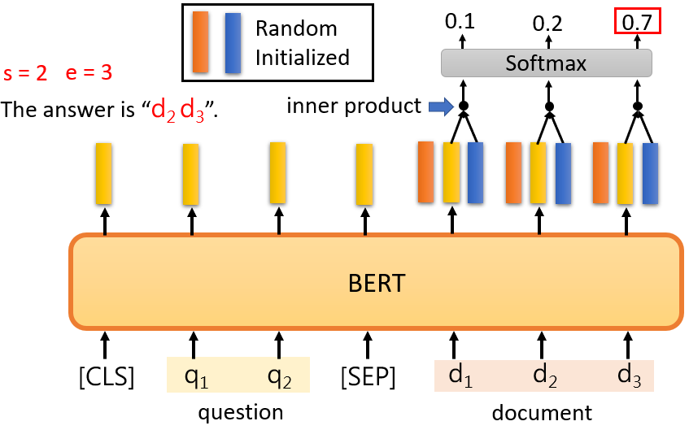
蓝色部分代表答案的终点，我们计算这个蓝色向量与文章对应的黄色向量的内积，然后，我们在这里也使用softmax，最后，找到最大值，如果第三个值是最大的，e应该是3，正确答案是d2和d3。
因为答案必须在文章中，如果答案不在文章中，你就不能使用这个技巧。这就是一个QA模型需要做的。注意，这两个向量是随机初始化的，而BERT是通过它预先训练的权重初始化的。
Q&A¶
Q：BERT的输入长度有限制吗？
A：理论上没有，但在现实中是有的。在理论上，因为BERT模型，是一个transformer的Encoder，所以它可以输入很长的序列，只要你必须能够做Self-Attention，Self-Attention的计算复杂性是非常高的。所以你会发现，在实践中BERT实际上不能输入太长的序列，你最多可以输入512长度的序列，如果你输入一个512长度的序列，Self-Attention在中间就要产生512乘以512大小的Attention Metric，那么你可能会被计算所淹没。所以实际上它的长度不是无限的。在助教的程序中，已经为大家处理了这个问题。我们限制了BERT的输入长度，而且用一篇文章来训练需要很长的时间。然后每次，我们只取其中的一段进行训练。我们不会将整篇文章输入BERT。
Q： 它与填空题有什么关系？
A：这个问题很好。这两件事之间有什么关系呢？这里先卖个关子，待会会试着回答你。
Training BERT is challenging!¶
BERT是这样一个著名的模型，它可以做任何事情，那么你可能会认为BERT，在预训练中，它只是填空题，但是，你自己真的不能把它训练起来。
首先，谷歌最早的BERT，它使用的数据规模已经很大了，它的数据中包含了30亿个词汇，30亿个词汇有多少？是《哈利波特全集》的3000倍。《哈利波特全集》大约是100万个词汇。
所以你处理起来会比较痛苦，更痛苦的是训练过程，为什么我知道训练过程是痛苦的呢，因为我们实验室有一个学生，他其实是助教之一，他自己试图训练一个BERT，他觉得他不能重现谷歌的结果，好，那么在这个图中，纵轴代表GLUE分数，我们刚才讲到GLUE，对吧？有9个任务，平均分数就叫GLUE分数，那么蓝线就是谷歌原来的BERT的GLUE分数。
那么我们的目标其实不是实现BERT，我们的目标是实现ALBERT。ALBERT是一个高级版本，是橙色的线，蓝线是我们自己训练的ALBERT，但是我们实际训练的不是最大版本，BERT有一个base版本和一个large版本。对于大版本，我们很难自己训练它，所以我们尝试用最小的版本来训练，看它是否与谷歌的结果相同。
你可能会说这30亿个数据，30亿个词似乎有很多数据。实际上，因为它是无标签数据，所以你只是从互联网上整理了一堆文本，有相同的信息量。所以你要爬上这个级别的信息并不难，难的是训练过程

好的，这个横轴是训练过程，参数更新多少次，大约一百万次的更新，需要多长时间，用TPU运行8天，所以你的TPU要运行8天，如果你在Colab上做，这个至少要运行200天。
所以，你真的很难自己训练这种BERT模型。幸运的是，作业只是对它进行微调。你可以在Colab上进行微调，在Colab上微调BERT只需要半小时到一小时。但是，如果你想从头开始训练它，也就是说，训练它做填空题，这将需要大量的时间。
BERT Embryology (胚胎学)¶
谷歌已经训练了BERT，而且这些Pre-Train模型是公开的，我们自己训练一个结果和谷歌的差不多的BERT有什么意义呢？
我们其实是想建立 BERT 胚胎学。
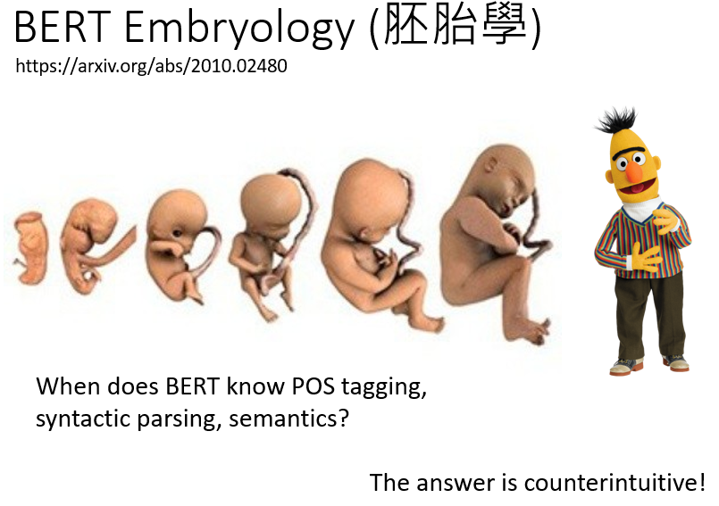
我们知道在BERT的训练过程中需要非常大的计算资源，所以我们想知道有没有可能，节省这些计算资源？有没有可能让它训练得更快？要知道如何让它训练得更快，也许我们可以从观察它的训练过程开始。
过去没有人观察过BERT的训练过程。因为在谷歌的论文中，他们只是告诉你，我有这个BERT。然后它在各种任务中做得很好。
BERT在学习填空的过程中，学到了什么？它在这个过程中，什么时候学会填动词？什么时候学会填名词？ 什么时候学会填代词？ 没有人研究过这个问题。
所以我们自己训练BERT后，可以观察到BERT什么时候学会填什么词汇，它的填空能力到底是怎么样提高的？ 我把论文的链接https://arxiv.org/abs/2010.02480放在这里，供大家参考。不过可以提前爆冷一下就是：事实和你直观想象的是不太一样的。
Pre-training a seq2seq model¶
我们补充一点，上述的任务都不包括Seq2Seq模型，如果我们要解决Seq2Seq模型要怎么办呢？BERT只是一个预训练Encoder，有没有办法预训练Seq2Seq模型的Decoder？
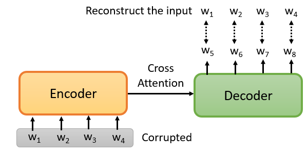
有，你就说我有一个Seq2Seq模型，有一个transformer，还有一个Encoder和Decoder。输入是一串句子，输出是一串句子，中间用Cross Attention连接起来，然后你故意在Encoder的输入上做一些干扰来破坏它，我以后会具体告诉你我说的 "破坏 "是什么意思
Encoder看到的是被破坏的结果，那么Decoder应该输出句子被破坏前的结果，训练这个模型实际上是预训练一个Seq2Seq模型。
有一篇论文叫MASS
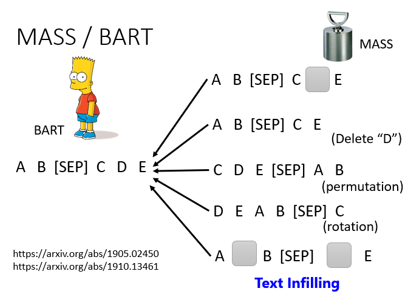
在MASS中，它说破坏的方法是，就像BERT做的那样，只要遮住一些地方就可以了，然后有各种方法来破坏它，比如，删除一些词，打乱词的顺序，旋转词的顺序。或者既插入一个MASK，又去掉一些词。总之，有各种方法，在破坏了输入的句子之后，通过Seq2Seq模型还原回来。
有一篇论文叫BART，它就是把这些方法全都用了。发现说这些方法都用，它可以比MASS的结果更好。
你可能会问，有那么多的mask的方法，哪种方法更好呢？谷歌已经做完了，有一篇论文叫T5。
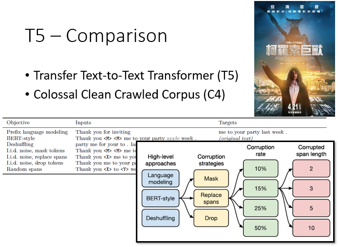
T5的全称是Transfer Text-To-Text Transformer，有五个T，所以叫T5。在这个T5里面，它只是做了各种尝试，它做了你能想象的所有组合。
T5是在一个语料库上训练的，叫"Colossal Clean Crawled Corpus"，对于这个数据集，Colossal就是巨无霸，就是非常巨大的意思，它叫C4，你用C4来训练T5，这个C4有多大？
C4是一个公共数据集，但是它的原始文件大小是7TB，加载之后，你可以通过脚本做预处理，由谷歌提供。这个脚本有一个文件，我看到它在网站上发布了，语料库网站上的文件说，用一个GPU做预处理需要355天，你可以下载它，但你在预处理时有问题。
所以，你可以发现，在深度学习中，数据量和模型都很惊人。
本文总阅读量次